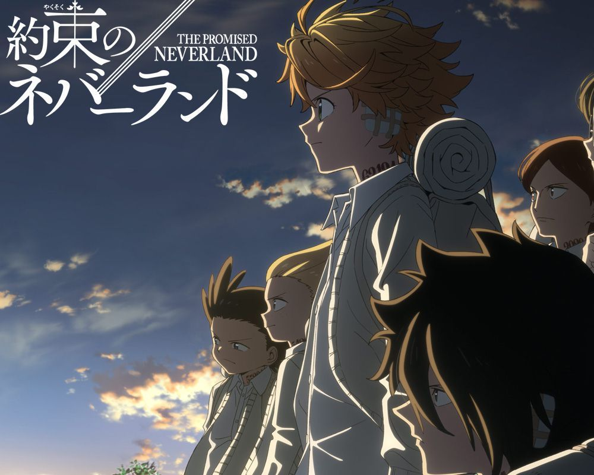
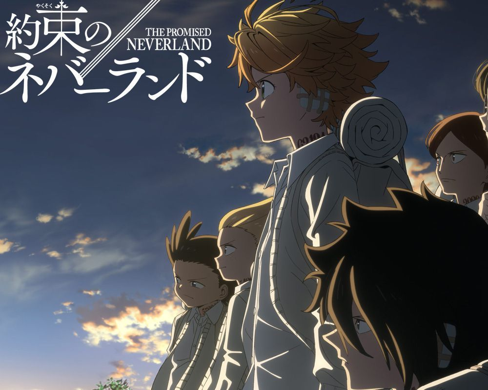
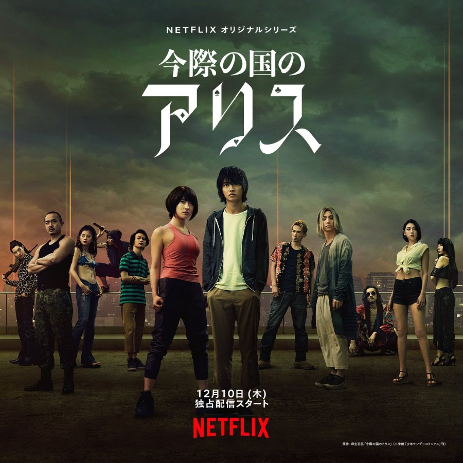
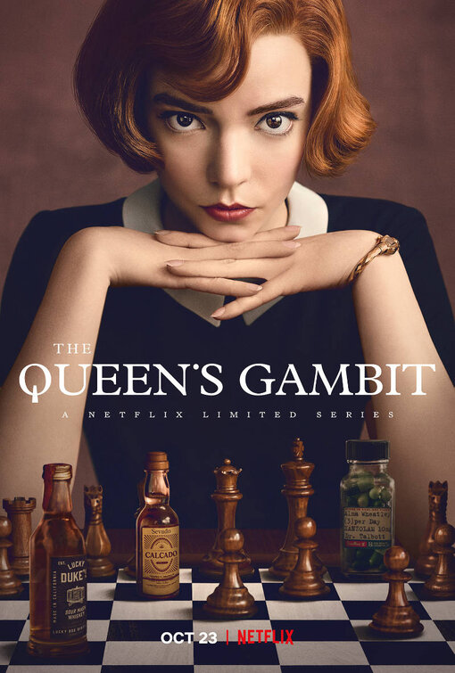
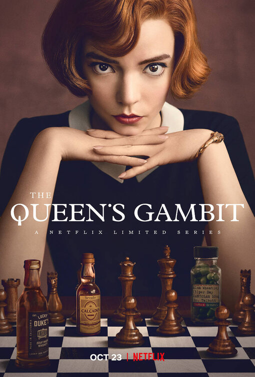
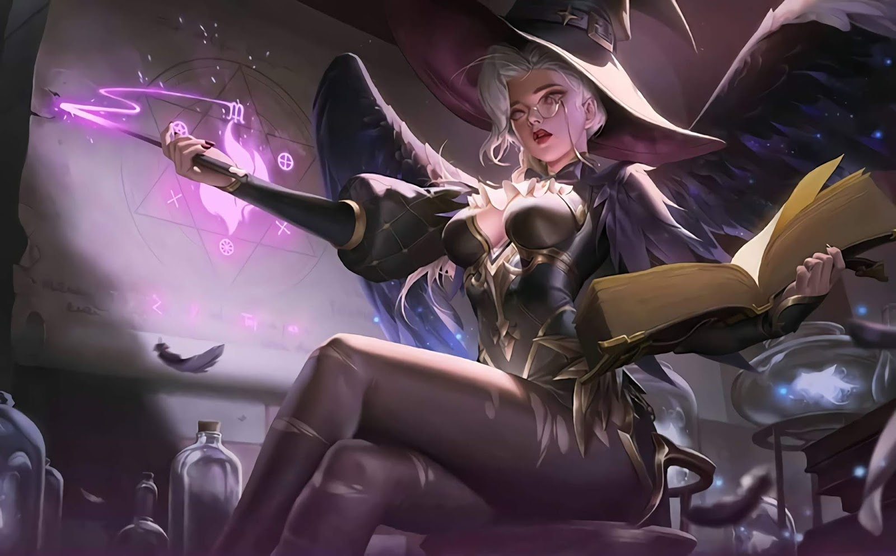
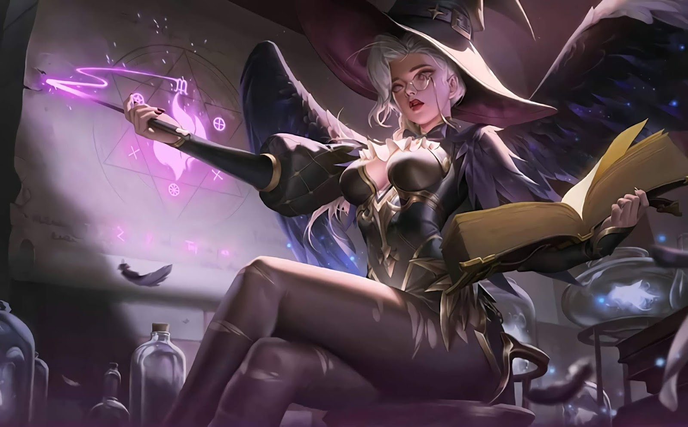
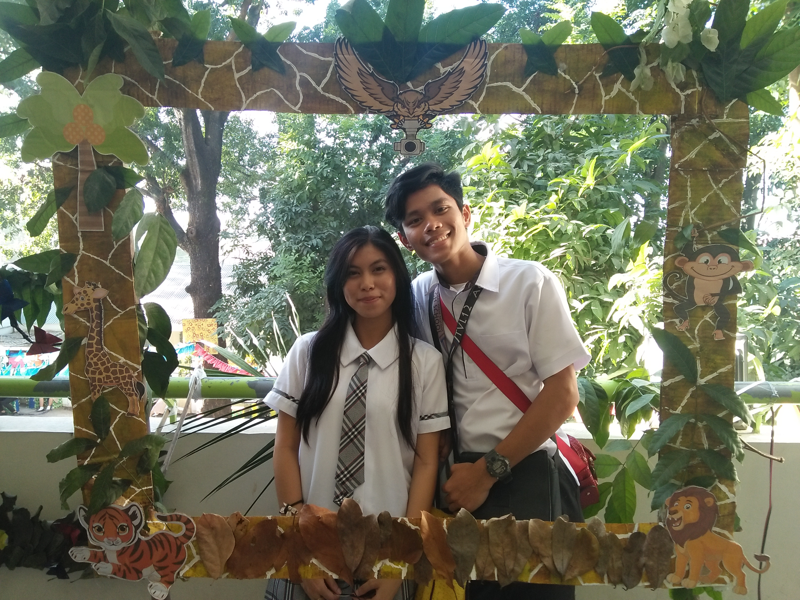
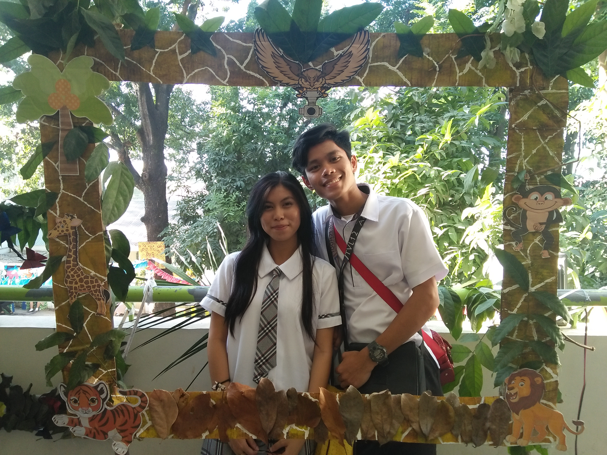

Jay-R V.Doria 19-0421 BSCS-202
Jay-R V.Doria 19-0421 BSCS-202
⚪I love to watch anime like Attack on Titan, Promise Neverland and Rising of the Shield Hero.
 


⚪Also, I love to watch series like Alice in Borderland, Game of Thrones and Queen's Gambit.

 

⚪I am also playing online games like League of Legends, Wild Rift and Mobile Legends.

 


 



Among the many happenings of my 20 years of existence in this world, there are moments that I treasure and will forever remain in my memory. These are the unforgettable precious moments in my life.
First moment is our every year end family bonding during Christmas day. In particular , we got to eat outside while we have our quality time together to talk without interruptions and worries. Together we spend our time relaxing and enjoying our day being complete as a family. During those times, I got to see my parents happy faces, my sisters bright smiles and I just feel like I'm lucky to have them in my life. Seeing my family every moment like that in bliss makes me feel like I can go on and surpass struggles in life for them. As an oldest and only son in the family, they serve as my source of strength and washes away my worries and exhaustion from all of the horrible situations life put me into. Therefore, I ought to be a good man not only for myself and my future but for them because they deserve to experience and have the precious things in life as they are precious for me as well. Every seconds of time spent with my family is diamond. What I feel with them is more than just a good laugh, I feel alive and genuinely loved. I won't ever trade my complete, loving, and happy family over anything or anyone. I ought to treasure them as I treasure our moments, until my last breath, family is everything to me.
Lastly, definitely I would not forget the year when I meet my love in Grade 12. 2018 is unforgettable year for me not just the moment because specifically this was the year I court her. Plus the fact that two of us spent most of our time together doing school works because she was studious. Everyday of my time with her is so precious to me. She's a positive influence to me, she enlightened me to see lights in darker paths and made my view in life even more wider and colorful. It's been 2 years, 5 months and 12 days ago since I bravely initiate myself to talk to her. For a fact, the most unforgettable moments of us together is still increasing in number but the moments shown in the pictures are the best one's because these signifies the beginning of having "us".

For my life lesson, I'll relate it with Albert Einstein quote,"You never fail until you stop trying".This saying hold various meanings for different situations. For instance, during coding it is okay to commit mistakes because on that mistake, you will become more determined to solve that problem rather than sitting and waiting for miracle and because of that you will learn a new knowledge. Moreover, you will not commit that mistake again because you learn something from it. For me, it is okay to fail as long as you will not stop trying. There are many things that you can learn from your mistakes. Therefore, you will never achieve something if you are doing nothing. In different situation, mistakes doesn't defined you as a failure, mistakes are made because you tried, you took risk and from that mistake you grew to become a better version of yourself. Therefore,it is a wonderful thing to grow from your mistakes, it is better to keep trying than to stop and regret it at the end.
Aspiration is a strong hope, dream or goal. It is something that we aspire to be or to become something that we want, to become better on what we currently are. There are many types of aspirations and I will discuss my career, social, and personal aspirations.
In terms of career, I want to be an expert in different language in programming such as Java, Python, HTML, CSS and Javascript. I will improve my programming skills in order to achieve my goal and my dream job to become stable in the future. In terms of social, I want to enhance my communication skills in order for me to speak fluently especially in English.
Lastly, in terms of personal, I want to control my emotions whenever I am in a state of anger and be a more patient person. Moreoever, the most important is to enjoy myself everyday, cherish all the moments and time that I am alive and use my remaining time to become happy and my special someone joyful.
A goal is an idea of the future or desire result that a person envision, plan and commit to achieve. Future goals can provide long-term direction and help us to focus on what we want to be or where we want to go with our lives.
In the future, I want to have a business to help my own family, parents and siblings in terms of financial. I also love to have a two-storey house that contains more than enough rooms and a car for travelling in order for my family to experience different kinds of places and enjoy our quality time.In addition, I am looking forward to have a stable job for the sake of financial stability and having my own happy family.Lastly, I want to use my programming skills to create a software that will benifit people in everyday life.